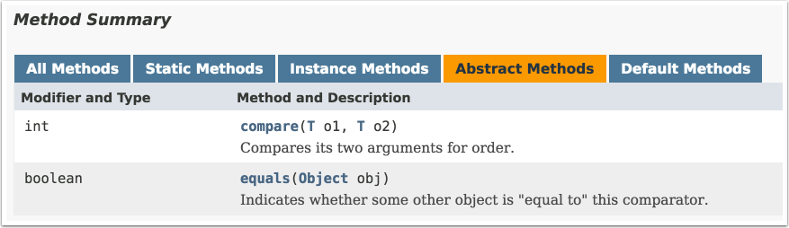
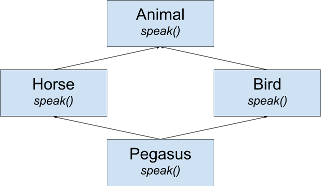

The biggest new additions to Java in version 8 are the ones related to functional programming: lambda expressions, method references, and streams. This course will discuss each of them, along with two other new features: static and default methods in interfaces. Many new methods have been added to the standard library involving those features, including major changes to the Comparator interface that make sorting, partitioning, and grouping much easier. These materials will also demonstrate those capabilities.
Finally, at long last a new date/time library has been added to the language, based on the open source JodaTime framework. These materials conclude with a section on the new java.time package, with some interesting examples.
Lambda Expressions
Lambda expressions are a new syntax, introduced in Java 8, that essentially represent methods treated as first-class objects. The first key concept you need to know about them is that they never exist by themselves — they are always assigned to a functional interface reference.
A functional interface is an interface with a single abstract method (SAM). Normally a class implements an interface by providing implementations for all the methods in it. This can be done with a top-level class, an inner class, or even an anonymous inner class.
For example, consider the Runnable interface, which has been in Java since version 1.0. It contains a single abstract method called run, which takes no arguments and returns void. The Thread class constructor takes a Runnable as an argument, so an anonymous inner class implementation is shown in Anonymous Inner Class Implementation of Runnable.
public class RunnableDemo {
public static void main(String[] args) {
// Works in Java 7 or earlier:
new Thread(new Runnable() {
@Override
public void run() {
System.out.println(
"inside runnable using an anonymous inner class");
}
}).start();
}
}The anonymous inner class syntax consists of the word new followed by the Runnable interface name and parentheses, implying that you’re defining a class without an explicit name that implements that interface. The code in the braces {} then overrides the run method, which simply prints a string to the console.
The code in Using a lambda expression in a Thread constructor shows the same example using a lambda expression.
Thread constructorpublic class RunnableDemo {
public static void main(String[] args) {
new Thread(() -> System.out.println(
"inside Thread constructor using lambda")).start();
}
}The lambda expression syntax uses an arrow to separate the dummy arguments (since there are zero arguments here, only a pair of empty parentheses is used) from the body. In this case, the body consists of a single line, so no braces are required. This is known as an expression lambda. Whatever value the expression evaluates to is returned automatically. In this case, since println returns void, the return from the expression is also void, which matches the return type of the run method.
A lambda expression must match the argument types and return type in the signature of the single abstract method in the interface. This is called being compatible with the method signature. The lambda expression is thus the implementation of the interface method, wrapped inside an object, which can then be assigned to a reference of that interface type.
As shown in Assigning a lambda expression to a variable, a lambda expression can also be assigned to a variable.
public class RunnableDemo {
public static void main(String[] args) {
Runnable r = () -> System.out.println(
"lambda expression implementing the run method");
new Thread(r).start();
}
}|
There is no class in the Java library called |
Assigning a lambda to the functional interface is the same as saying the lambda is the implementation of the single abstract method inside it. You can think of the lambda as the body of an anonymous inner class that implements the interface. That is why the lambda must be compatible with the abstract method; its argument types and return type must match the signature of that method. Notably, however, the name of the method being implemented is not important. It does not appear anywhere as part of the lambda expression syntax.
This example was particularly simple because the run method takes no arguments and returns void. Consider instead the functional interface java.io.FilenameFilter, which has been part of the Java standard library since version 1.0. FilenameFilter instances are used as arguments to the File.list method to restrict the returned files to only those that satisfy the method.
From the Javadocs, the FilenameFilter class contains the single abstract method accept, with the following signature:
boolean accept(File dir, String name)The File argument is the directory in which the file is found, and the String name is the name of the file.
The code in An anonymous inner class implementation of FilenameFilter implements FilenameFilter using an anonymous inner class to return only Java source files.
import java.io.File;
import java.io.FilenameFilter;
import java.util.Arrays;
public class UseFilenameFilter {
public static void main(String[] args) {
File directory = new File("./src/main/java");
// Anonymous inner class
String[] names = directory.list(new FilenameFilter() {
@Override
public boolean accept(File dir, String name) {
return name.endsWith(".java");
}
});
System.out.println(Arrays.asList(names));
}
}In this case, the accept method returns true if the file name ends with .java and false otherwise.
The lambda expression version is shown in Lambda expression implementing FilenameFilter.
import java.io.File;
import java.io.FilenameFilter;
import java.util.Arrays;
public class UseFilenameFilter {
public static void main(String[] args) {
File directory = new File("./src/main/java");
// Use lambda expression instead
String[] names = directory.list((dir, name) -> name.endsWith(".java"));
System.out.println(Arrays.asList(names));
}
}The resulting code is much simpler. This time the arguments are contained within parentheses, but do not have types declared. At compile time, the compiler knows that the list method takes an argument of type FilenameFilter, and therefore knows that the signature of its single abstract method (accept). It therefore knows that the arguments to accept are a File and a String, so that the compatible lambda expression arguments must match those types. The return type on accept is a boolean, so the expression to the right of the arrow must also return a boolean.
If you wish to specify the data types in the code, you are free to do so, as in Lambda expression is explicit data types.
import java.io.File;
import java.io.FilenameFilter;
import java.util.Arrays;
public class UseFilenameFilter {
public static void main(String[] args) {
File directory = new File("./src/main/java");
// Explicit data types
String[] names = directory.list((File dir, String name) ->
name.endsWith(".java"));
System.out.println(Arrays.asList(names));
}
}Finally, if the implementation of the lambda requires more than one line, you need to use braces and an explicit return statement, as shown in A block lambda.
import java.io.File;
import java.io.FilenameFilter;
import java.util.Arrays;
public class UseFilenameFilter {
public static void main(String[] args) {
File directory = new File("./src/main/java");
String[] names = directory.list((File dir, String name) -> {
return name.endsWith(".java");
});
System.out.println(Arrays.asList(names));
}
}This is known as a block lambda. In this case the body still consists of a single line, but the braces now allow for multiple statements, each of which must be terminated with a semicolon, as usual. The return keyword is also required.
As stated, lambda expressions never exist alone. There is always a context for the expression, which indicates the functional interface to which the expression is assigned. A lambda can be an argument to a method, a return type from a method, or assigned to a reference. In each case, the type of the assignment must be a functional interface.
Method References
If a lambda expression is essentially treating a method as though it was a first-class object, then a method reference treats and existing method as though it was a lambda expression.
For example, the forEach method in Iterable takes a Consumer as an argument. Consumer is one of the new functional interfaces that were added to the java.util.function package, which are designed to be used by the rest of the API. Using a method reference to access println shows that Consumer can be implemented as either a lambda expression or as a method reference.
printlnStream.of(3, 1, 4, 1, 5, 9)
.forEach(x -> System.out.println(x)); (1)
Stream.of(3, 1, 4, 1, 5, 9)
.forEach(System.out::println); (2)
Consumer<Integer> printer = System.out::println; (3)
Stream.of(3, 1, 4, 1, 5, 9)
.forEach(printer);| 1 | Using a lambda expression |
| 2 | Using a method reference |
| 3 | Assigning the method reference to a functional interface |
The double-colon notation provides the reference to the println method on the System.out instance, a reference of type PrintStream. No parentheses are placed at the end of the method reference.
|
If you write a lambda expression that consists of one line that invokes a method, consider using the equivalent method reference instead. |
The method reference provides a couple of (minor) advantages over the lambda syntax. First, it tends to be shorter, and second, it includes the class containing the method. Both often make the code easier to read.
Method references can be used with static methods as well, as shown in Using a method reference to a static method.
Stream.generate(Math::random) (1)
.limit(10)
.forEach(System.out::println); (2)| 1 | Reference to static method |
| 2 | Reference to instance method |
The generate method on Stream takes a Supplier as an argument (another of the new interfaces in java.util.function), which has a method that takes no arguments and returns a single result. The random method in the Math class is compatible with that, because it takes no arguments and produces a uniformly-distributed pseudo-random double between 0 and 1. The method reference Math::random uses that method as the Supplier.
The generate method is a factory method on the Stream interface, which produces new values every time it is invoked. The result is an infinite stream, so the limit method is used to ensure only 10 values are produced. Those values are then printed to standard output using the System.out::println method reference as a Consumer (the argument to forEach, as described earlier).
In stream processing, it is also common to access an instance method using the class name in a method reference if you are processing a series of inputs. The code in Invoking the length method on String using a method reference shows the invocation of the length method on each individual String in the stream.
length method on String using a method referenceStream.of("this", "is", "a", "stream", "of", "strings")
.mapToInt(String::length)
.forEach(System.out::println);The argument of the mapToInt method is of type ToIntFunction (one of several interfaces related to Function, another of the new interfaces in java.util.function) and produces an IntStream. That means it contains a method that takes a generic type (here a String, from the context) and produces an int. The length method in String is compatible with that requirement. Since there is no explicit reference to an individual String, the syntax implies that the length method is invoked on each String in the stream.
A method reference is essentially an abbreviated syntax for a lambda, which is more general. Every method reference has an equivalent lambda expression. The equivalent lambdas for Invoking the length method on String using a method reference are shown in Lambda expression equivalents for method references.
Stream.of("this", "is", "a", "stream", "of", "strings")
.mapToInt(s -> s.length())
.forEach(x -> System.out.println(x));As with any lambda expression, the context matters. When referring to overloaded methods, the context will determine which version is accessed using the normal type resolution mechanism. You can also use this or super as the left-side of a method reference if there is any ambiguity.
You can even invoke constructors using method references, which are shown next.
Constructor References
A constructor reference is defined by using the keyword new as a method reference in order to instantiate an object.
Consider a trivial POJO[1] called Person, as shown in A Person class, which is a simple wrapper for a string name.
public class Person {
private String name;
public Person() {}
public Person(String name) {
this.name = name;
}
// getters and setters ...
// equals and hashCode overrides ...
public String toString() {
return String.format("Person(name:%s)", name);
}
}Given a collection of strings, you can transform it into a collection of Person instances using the constructor reference in Transforming strings into Person instances.
Person instancesList<String> names =
Arrays.asList("Joffrey Baratheon", "Daenerys Targaryen", "Jon Snow",
"Arya Stark", "Tyrion Lannister", "Margaery Tyrell");
List<Person> people = names.stream()
.map(Person::new) (1)
.collect(Collectors.toList());
// equivalent lambda expression
List<Person> people = names.stream()
.map(name -> new Person(name))
.collect(Collectors.toList());| 1 | Constructor reference instantiating Person |
The syntax Person::new refers to the constructor in the Person class. As with all lambda expressions, the context determines which constructor is executed. Because the context supplies a string, the one-arg String constructor is used.
Constructor references can also be used with arrays. To create an array of Person instances, use the technique shown in Creating an array of Person references.
Person referencesPerson[] people = names.stream()
.map(Person::new) (1)
.toArray(Person[]::new); (2)| 1 | Constructor reference for Person |
| 2 | Constructor reference for an array of Person |
The toArray method argument creates an array of Person references of the proper size and populates it with the instantiated Person instances.
Functional Interfaces in the java.util.function Package
A functional interface in Java 8 is an interface with a single, abstract method. As such, it can be the target for a lambda expression or method reference.
The use of the term abstract here is significant. Prior to Java 8, all methods in interfaces were assumed to be abstract by default — you didn’t even need to add the keyword.
For example, here is the definition of an interface called PalindromeChecker, shown in A Palindrome Checker interface.
@FunctionalInterface
public interface PalindromeChecker {
boolean isPalindrome(String s);
}Since all methods in an interface are public, you can leave out the access modifier, and as stated you can leave out the abstract keyword.
Since this interface has only a single, abstract method, it is a functional interface. Java 8 provides an annotation called @FunctionalInterface in the java.lang package, that can be applied to the interface, as shown in the code.
The annotation is not required, but is a good idea, for two reasons. First, it triggers a compile-time check that this interface does, in fact, satisfy the requirement. If the interface has either zero or more than one abstract methods, the compiler will give an error.
The other benefit to adding the @FunctionalInterface annotation is that it generates a statement in the JavaDocs as follows:
Functional Interface:
This is a functional interface and can therefore be used as the assignment
target for a lambda expression or method reference.Functional interfaces can have default and static methods as well. Both default and static methods have implementations, so they don’t count against the single abstract method requirement. MyInterface is a functional interface with static and default methods shows an example.
@FunctionalInterface
public interface MyInterface {
int myMethod();
// int myOtherMethod();
default String sayHello() {
return "Hello, World";
}
static void myStaticMethod() {
System.out.println("I'm a static method in an interface");
}
}Note that if the commented method myOtherMethod was included, the interface would no longer satisfy the requirement. The annotation would generate an error, of the form "multiple non-overriding abstract methods found".
Interfaces can extend other interfaces, and even extend multiple other interfaces. The annotation checks the current interface. So if one interface extends an existing functional interface and adds another abstract method, it is not itself a functional interface. See Extending a functional interface — no longer functional.
public interface MyChildInterface extends MyInterface {
int myOtherMethod();
}The MyChildInterface is not a functional interface, because it has two abstract methods: myMethod which it inherits from MyInterface, and myOtherMethod which it declares. Without the @FunctionalInterface annotation, this compiles, because it’s a standard interface. It cannot, however, be the target of a lambda expression.
The phrase, "target of a lambda expression" means that a reference of the interface type can be declared and a lambda expression or method reference can be assigned to the result. For example, consider Testing a palindrome checker using a lambda, a JUnit test that checks a lambda implementation of the PalindromeChecker interface.
import org.junit.Test;
import java.util.Arrays;
import java.util.List;
import static org.junit.Assert.assertTrue;
public class PalindromeCheckerTest {
private List<String> palindromes = Arrays.asList(
"Madam, in Eden, I'm Adam",
"Flee to me, remote elf!",
"Go hang a salami; I'm a lasagna hog",
"A Santa pets rats, as Pat taps a star step at NASA"
);
@Test
public void isPalindromeUsingLambda() throws Exception {
palindromes.forEach(s -> {
StringBuilder sb = new StringBuilder();
for (char c : s.toCharArray()) {
if (Character.isLetter(c)) {
sb.append(c);
}
}
String forward = sb.toString().toLowerCase();
String backward = sb.reverse().toString().toLowerCase();
assertTrue(forward.equals(backward));
});
}
}The test uses the default method forEach on the list to iterate over the collection, passing each string to the given lambda expression. At the end of the expression is the static assertTrue method (note the static import) that checks the results. The forEach method takes a Consumer as an argument, which means the supplied lambda expression must take one argument and return nothing.
This is still fairly complicated, but since we know an implementation, it can be added to the interface itself, as in A palindrome checker with a static implementation method.
@FunctionalInterface
public interface PalindromeChecker {
boolean isPalidrome(String s);
static boolean checkPalindrome(String s) {
StringBuilder sb = new StringBuilder();
for (char c : s.toCharArray()) {
if (Character.isLetter(c)) {
sb.append(c);
}
}
String forward = sb.toString().toLowerCase();
String backward = sb.reverse().toString().toLowerCase();
return forward.equals(backward);
}
}The existence of the static method doesn’t change the fact that the interface is functional. To test this, see the test method in Added test method to check the implementation.
@Test
public void isPalidromeUsingMethodRef() throws Exception {
assertTrue(
palindromes.stream()
.allMatch(PalindromeChecker::checkPalindrome));
assertFalse(
PalindromeChecker.checkPalindrome("This is NOT a palindrome"));
}The allMatch method on Stream takes a Predicate, another of the functional interfaces in the java.util.function package. A Predicate takes a single argument and returns a boolean. The checkPalindrome method satisfies this requirement, and here is accessed using a method reference.
The allMatch method returns true only if every element of the stream satisfies the predicate. Just to make sure the tested implementation doesn’t simply return true for all cases, the assertFalse test checks a string that isn’t a palindrome.
One edge case should also be noted. The Comparator interface is used for sorting, which is discussed in other recipes. If you look at the JavaDocs for that interface and select the Abstract Methods tab, you see the methods shown in Abstract methods in the Comparator class.

How can this be a functional interface if there are two abstract methods, especially if one of them is actually implemented in java.lang.Object?
As it turns out, this has always been legal. You can declare methods in Object as abstract in an interface, but that doesn’t make them abstract. Usually the reason for doing so is to add documentation that explains the contract of the interface. In the case of Comparator, the contract is that if two elements return true from the equals method, the compare method should return zero. Adding the equals method to Comparator allows the associated JavaDocs to explain that.
From a Java 8 perspective, this fortunately means that methods from Object don’t count against the single abstract method limit, and Comparator is still a functional interface.
Default and Static Methods in Interfaces
The traditional reason Java never supported multiple inheritance is the so-called diamond problem. Say you have an inheritance hierarchy as shown in the (vaguely UML-like) Animal Inheritance.

Class Animal has two child classes, Bird and Horse, each of which override the speak method, in Horse to say "whinny" and in Bird to say "chirp". What, then, does Pegasus (who multiply inherits from both Horse and Bird)[2] say? What if you have a reference of type Animal assigned to an instance of Pegasus? What then should the speak method return?
Animal animal = new Pegaus();
animal.speak(); // whinny, chirp, or other?Different languages take different approaches to this problem. In C++, for example, multiple inheritance is allowed, but if a class inherits conflicting implementations, it won’t compile. In Eiffel[3], the compiler allows you to choose which implementation you want.
Java’s approach is to prohibit multiple inheritance, and interfaces are introduced as a work-around. Since interfaces have only abstract methods, there are no implementations to conflict. Multiple inheritance is even allowed with interfaces, though not very common.
The problem is, if you can never implement a method in an interface, you wind up with some awkward issues. For example, among the methods in the java.util.Collection interface are:
boolean isEmpty()
int size()The isEmpty method returns true if there are no elements in the collection, and false otherwise. The size method returns the number of elements in the collections. Regardless of the underlying implementation, you can immediately implement the isEmpty method in terms of size, as in Implementation of isEmpty in terms of size.
public boolean isEmpty() {
return size() == 0;
}Since Collection is an interface, you can’t do this in the interface itself. Instead, the abstract class java.util.AbstractCollection includes, among other code, exactly the implementation of isEmpty shown here. If you are creating your own collection implementation and you don’t already have a superclass, you can extend AbstractCollection and you get the isEmpty method for free. If you already have a superclass, you have to implement the Collection interface instead and remember to provide your own implementation of isEmpty as well as size.
All of this is quite familiar to experienced Java developers, but as of Java 8 the situation changes. Now you can add implementations to interface methods. All you have to do is add the keyword default to a method and provide an implementation. The example in The Employee interface with a default method illustrates a default method.
Employee interface with a default methodpublic interface Employee {
String getFirst();
String getLast();
void convertCaffeineToCodeForMoney();
default String getName() {
return String.format("%s %s", getFirst(), getLast());
}
}The getName method has the keyword default, and its implementation is in terms of the other, abstract, methods in the interface, getFirst and getLast.
Many of the existing interfaces in Java have been enhanced with default methods. For example, Collection now contains the following default methods:
default boolean removeIf(Predicate<? super E> filter)
default Stream<E> stream()
default Stream<E> parallelStream()
default Spliterator<E> spliterator()The removeIf method removes all elements from the collection that satisfy the Predicate argument, returning true if any elements were removed. The stream and parallel methods are factory methods for creating streams, and are discussed elsewhere in these materials. The spliterator method returns an object from a class that implements the Spliterator interface, which is an object for traversing and partitioning elements from a source.
Default methods are used the same way any other methods are used, as Using default methods shows.
List<Integer> nums = Arrays.asList(3, 1, 4, 1, 5, 9);
boolean removed = nums.removeIf(n -> n <= 0); (1)
System.out.println("Elements were " + (removed ? "" : "NOT") + " removed");
// Iterator has a default forEach method
nums.forEach(System.out::println);| 1 | Calls the default method in Collection |
What happens when a class implements two interfaces with the same default method? The short answer is that if the class implements the method itself everything is fine, because in any conflict between a class and an interface, the class always wins.
Turning now to static methods, the idea that that all static members of Java classes are class-level, meaning they are associated with the class as a whole rather than with a particular instance. That makes their use in interfaces odd from a philosophical point of view. After all, what does a class-level member mean when the interface is implemented by many different classes?
You access a static attribute or method using the class name. Again, what does that imply when a class implements an interface? Should the static member be accessible via the class name rather than the interface name?
Even more, if interfaces supported static members, does a class even need to implement the interface in order to use those elements?
The designers of Java could have decided these questions in several different ways. Prior to Java 8, the decision was not to allow static members in interfaces at all.
The down side of that decision is that developers created utility classes: classes that contained only static methods. A typical example is java.util.Collections, which contains methods for sorting and searching, wrapping collections in synchronized or unmodifiable types, and more. In the NIO package, java.nio.file.Paths is another example, which contains only static methods that parse Path instances from strings or URIs.
Now, in Java 8, you can add static methods to interfaces whenever you like. The mechanism is:
-
Add the
statickeyword to the method. -
Provide an implementation (which cannot be overridden). In this they are like
defaultmethods, and are included in the default tab in the JavaDocs. -
Access the method using the interface name. Classes do not need to implement an interface to use its static methods.
A very common example of a static method in an interface is the comparing method in java.util.Comparator, along with its primitive variants comparingInt, comparingLong, and comparingDouble. The Comparator interface also has static methods naturalOrder and reverseOrder. Sorting strings shows how they are used.
List<String> bonds = Arrays.asList("Connery", "Lazenby", "Moore", "Dalton",
"Brosnan", "Craig");
// Sorted in natural order
List<String> sorted = bonds.stream()
.sorted(Comparator.naturalOrder()) // same as "sorted()"
.collect(Collectors.toList());
// [Brosnan, Connery, Craig, Dalton, Lazenby, Moore]
// Sorted in the reverse of the natural order
sorted = bonds.stream()
.sorted(Comparator.reverseOrder())
.collect(Collectors.toList());
// [Moore, Lazenby, Dalton, Craig, Connery, Brosnan]
// Sorted by name, all lowercase
sorted = bonds.stream()
.sorted(Comparator.comparing(String::toLowerCase))
.collect(Collectors.toList());
// [Brosnan, Connery, Craig, Dalton, Lazenby, Moore]
// Sorted by length
sorted = bonds.stream()
.sorted(Comparator.comparingInt(String::length))
.collect(Collectors.toList());
// [Moore, Craig, Dalton, Connery, Lazenby, Brosnan]
// Sorted by length then natural order
sorted = bonds.stream()
.sorted(Comparator.comparingInt(String::length)
.thenComparing(Comparator.naturalOrder()))
.collect(Collectors.toList());
// [Craig, Moore, Dalton, Brosnan, Connery, Lazenby]Static methods in interfaces remove the need to create separate utility classes, though that option is still available if a design calls for it.
The key points are:
-
static methods must have an implementation
-
you can not override a static method
-
call static methods using the interface name
-
you do not need to implement an interface to use its static methods
Streams
Java 8 introduced a new streaming metaphor to support functional programming. A stream is a sequence of elements that does not save the elements and does not modify the original source. Functional programming in Java often involves generating a stream from some source of data, passing the data through a series of intermediate operations (called a pipeline), and completing the process with a terminal expression.
Streams can only be used once. After a stream has passed through zero or more intermediate operations and reached a terminal operation, it is finished. To process the values again, you need to make a new stream.
The new java.util.stream.Stream interface in Java 8 provides several static methods for creating streams. Specifically, you can use the static methods Stream.of, Stream.iterate, and Stream.generate.
The Stream.of method takes a variable argument list of elements:
static <T> Stream<T> of(T... values)The implementation of the of method in the standard library actually delegates to the stream method in the Arrays class, shown in Reference implementation of Stream.of.
@SafeVarargs
public static<T> Stream<T> of(T... values) {
return Arrays.stream(values);
}
The @SafeVarargs annotation is part of Java generics. It comes up when you have an array as an argument, because it is possible to assign a typed array to an Object array and then violate type safety with an added element. The @SafeVarargs annotation tells the compiler that the developer promises not to do that.
|
As a trivial example, see Creating a stream using Stream.of.
Since streams do not process any data until a terminal expression is reached, each of the examples in this section will add the collect method at the end.
|
String names = Stream.of("Gomez", "Morticia", "Wednesday", "Pugsley")
.collect(Collectors.joining(","));
System.out.println(names);
// prints Gomez,Morticia,Wednesday,PugsleyThe API also includes an overloaded of method that takes a single element T t. This method returns a singleton sequential stream containing a single element.
Speaking of the Arrays.stream method, Creating a stream using Arrays.stream shows an example.
String[] munsters = { "Herman", "Lily", "Eddie", "Marilyn", "Grandpa" };
names = Arrays.stream(munsters)
.collect(Collectors.joining(","));
System.out.println(names);
// prints Herman,Lily,Eddie,Marilyn,GrandpaSince you have to create an array ahead of time, this approach is less convenient, but works well for variable argument lists. The API includes overloads of Arrays.stream for arrays of int, long, and double, as well as the generic type used here.
Another static factory method in the Stream interface is iterate. The signature of the iterate method is:
static <T> Stream<T> iterate(T seed, UnaryOperator<T> f)According to the JavaDocs, this method "returns an infinite (emphasis added) sequential, ordered Stream produced by iterative application of a function f to an initial element seed". A UnaryOperator is a Function whose single, generic input and output types are the same type. This is useful when you have a way to produce the next value of the stream from the current value, as in Creating a stream using Stream.iterate.
List<BigDecimal> nums =
Stream.iterate(BigDecimal.ONE, n -> n.add(BigDecimal.ONE) )
.limit(10)
.collect(Collectors.toList());
System.out.println(nums);
// prints [1, 2, 3, 4, 5, 6, 7, 8, 9, 10]This example counts from one using BigDecimal instances. Since the resulting stream is unbounded, the intermediate operation limit is needed here.
The other factory method in the Stream class is generate, whose signature is:
static <T> Stream<T> generate(Supplier<T> s)This method produces a sequential, unordered stream by repeatedly invoking the Supplier. A simple example of a Supplier in the standard library (a method that takes no arguments but produces a return value) is the Math.random method, which is used in Creating a stream using Stream.generate.
long count = Stream.generate(Math::random)
.limit(10)
.count();
System.out.println(count);
// prints 10, the number of times the Supplier was invokedIf you already have a collection, you can take advantage of the default method stream that has been added to the Collection interface, as in Creating a stream from a collection.[4]
List<String> bradyBunch = Arrays.asList("Greg", "Marcia", "Peter",
"Jan", "Bobby", "Cindy");
names = bradyBunch.stream()
.collect(Collectors.joining(","));
System.out.println(names);
// prints Greg,Marcia,Peter,Jan,Bobby,CindyThere are three child interfaces of Stream specifically for working with primitives: IntStream, LongStream, and DoubleStream. IntStream and LongStream each has two additional factory methods for creating streams, range and rangeClosed. Their method signatures from IntStream are (LongStream is similar):
static IntStream range(int startInclusive, int endExclusive)
static IntStream rangeClosed(int startInclusive, int endInclusive)
static LongStream range(long startInclusive, long endExclusive)
static LongStream rangeClosed(long startInclusive, long endInclusive)The arguments show the difference between the two: rangeClosed includes the end value, and range doesn’t. Each returns a sequential, ordered stream that starts with the first argument and increments by one after that. An example of each is shown in The range and rangeClosed methods.
List<Integer> ints = IntStream.range(10, 15)
.boxed() (1)
.collect(Collectors.toList());
System.out.println(ints);
// prints [10, 11, 12, 13, 14]
List<Long> longs = LongStream.rangeClosed(10, 15)
.boxed() (1)
.collect(Collectors.toList());
System.out.println(longs);
// prints [10, 11, 12, 13, 14, 15]| 1 | Necessary for Collectors to convert to generic List |
The only quirk in that example is the use of the boxed method to convert the int values to Integer instances.
To summarize, here are the methods to create streams:
-
Stream.of(T… values)andStream.of(T t) -
Arrays.stream(T[] array), with overloads forint[],double[], andlong[] -
Stream.iterate(T seed, UnaryOperator<T> f) -
Stream.generate(Supplier<T> s) -
Collection.stream() -
Using
rangeandrangeClosed:-
IntStream.range(int startInclusive, int endExclusive) -
IntStream.rangeClosed(int startInclusive, int endInclusive) -
LongStream.range(long startInclusive, long endExclusive) -
LongStream.rangeClosed(long startInclusive, long endInclusive)
-
Sorting
The sorted method on Stream produces a new, sorted stream using the natural ordering for the class. The natural ordering is specified by implementing the java.util.Comparable interface.
For example, consider sorting a collection of strings, as shown in Sorting strings lexicographically..
private List<String> sampleStrings =
Arrays.asList("this", "is", "a", "list", "of", "strings");
// Default sort from Java 7-
public List<String> defaultSort() {
Collections.sort(sampleStrings);
return sampleStrings;
}
// Default sort from Java 8+
public List<String> defaultSortUsingStreams() {
return sampleStrings.stream()
.sorted()
.collect(Collectors.toList());
}Java has included a utility class called Collections ever since the collections framework was added back in version 1.2. The static sort method on Collections takes a List as an argument, but returns void. The sort is destructive, modifying the supplied collection. This approach does not follow the functional principles supported by Java 8, which emphasize immutability.
Java 8 uses the sorted method on streams to do the same sorting, but produces a new stream rather than modifying the original collection. In this example, after sorting the collection, the returned list is sorted according to the natural ordering of the class. For strings, the natural ordering is lexicographical, which reduces to alphabetical when all the strings are lowercase, as in this example.
If you want to sort the strings in a different way, then there is an overloaded sorted method that takes a Comparator as an argument.
Sorting strings by length shows a length sort for strings in two different ways.
// Sort by length with sorted
public List<String> lengthSortUsingSorted() {
return sampleStrings.stream()
.sorted((s1, s2) -> s1.length() - s2.length()) (1)
.collect(toList());
}
// Length sort with comparingInt
public List<String> lengthSortUsingComparator() {
return sampleStrings.stream()
.sorted(Comparator.comparingInt(String::length)) (2)
.collect(toList());
}| 1 | Using a lambda for the Comparator |
| 2 | Generating a Comparator using the comparingInt method |
The argument to the sorted method is a java.util.Comparator, which is a functional interface. In lengthSortUsingSorted, a lambda expression is provided to implement the compare method in Comparator. In Java 7 and earlier, the implementation could be provided by an anonymous inner class, but here a lambda expression is all that is required.
The second method, lengthSortUsingComparator, takes advantage of one of the static methods added to the Comparator interface. The comparingInt method takes an argument of type ToIntFunction that transforms the string into an int, called a keyExtractor in the docs, and generates a Comparator that sorts the collection using that key.
The added default methods in Comparator are extremely useful. While you can write a Comparator that sorts by length pretty easily, when you want to sort by more than one field that can get complicated. Consider sorting the strings by length, then equal length strings alphabetically. Using the default and static methods in Comparator, that becomes almost trivial, as shown in Sorting by length, then equal lengths lexicographically.
import static java.util.Comparator.comparing;
import static java.util.Comparator.naturalOrder;
import static java.util.Comparator.reverseOrder;
import static java.util.stream.Collectors.toList;
// class definition...
// Sort by length then alpha using sorted
public List<String> lengthSortThenAlphaSort() {
return sampleStrings.stream()
.sorted(comparing(String::length)
.thenComparing(naturalOrder()))
.collect(toList());
}
// Sort by length then reverse alpha using sorted
public List<String> lengthSortThenReverseAlphaSort() {
return sampleStrings.stream()
.sorted(comparing(String::length)
.thenComparing(reverseOrder()))
.collect(toList());
}Comparator provides a default method called thenComparing. Just like comparing, it also takes a Function as an argument, known a key extractor. Chaining this to the comparing method returns a Comparator that compares by the first quantity, then equal first by the second, and so on.
Notice the static imports in this case that make the code easier to read. Once you get used to the static methods in both Comparator and Collectors, this becomes an easy way to simplify the code.
This approach works on any class, even if it does not implement Comparable. Consider the Golfer class shown in A class for golfers.
public class Golfer {
private String first;
private String last;
private int score;
// constructors ...
// getters and setters ...
/// toString, equals, hashCode ...
}To create a leader board at a tournament, it makes sense to sort by score, then by last name, and then by first name. Sorting golfers shows how to do that.
private List<Golfer> golfers = Arrays.asList(
new Golfer("Jack", "Nicklaus", 68),
new Golfer("Tiger", "Woods", 70),
new Golfer("Tom", "Watson", 70),
new Golfer("Ty", "Webb", 68),
new Golfer("Bubba", "Watson", 70)
);
public List<Golfer> sortByScoreThenLastThenFirst() {
golfers.stream()
.sorted(comparingInt(Golfer::getScore)
.thenComparing(Golfer::getLast)
.thenComparing(Golfer::getFirst))
.collect(toList());
}The output from calling sortByScoreThenLastThenFirst is shown in Sorted golfers.
Golfer{first='Jack', last='Nicklaus', score=68}
Golfer{first='Ty', last='Webb', score=68}
Golfer{first='Bubba', last='Watson', score=70}
Golfer{first='Tom', last='Watson', score=70}
Golfer{first='Tiger', last='Woods', score=70}The golfers are sorted by score, so Nicklaus and Webb[5] come before Woods and both Watsons. Then equal scores are sorted by last name, putting Nicklaus before Webb and Watson before Woods. Finally, equal scores and last names are sorted by first name, putting Bubba Watson before Tom Watson.
The default and static methods in Comparator, along with the new sorted method on Stream, makes generating complex sorts easy.
Partitions and Groups
Say you have a collection of strings. If you want to split them into those that have even lengths and those that have odd lengths, you can use Collectors.partitioningBy, as in Partitioning strings by even or odd lengths.
List<String> strings = Arrays.asList("this", "is", "a", "long", "list", "of",
"strings", "to", "use", "as", "a", "demo");
Map<Boolean, List<String>> lengthMap = strings.stream()
.collect(Collectors.partitioningBy(s -> s.length() % 2 == 0));
lengthMap.forEach((key,value) -> System.out.printf("%5s: %s%n", key, value));
//
// false: [a, strings, use, a]
// true: [this, is, long, list, of, to, as, demo]The signature of the two partitioningBy methods are:
static <T> Collector<T,?,Map<Boolean,List<T>>> partitioningBy(
Predicate<? super T> predicate)
static <T,D,A> Collector<T,?,Map<Boolean,D>> partitioningBy(
Predicate<? super T> predicate, Collector<? super T,A,D> downstream)The first partitioningBy method takes a Predicate as an argument. It divides the elements into those that satisfy the Predicate and those that don’t. You always get a Map as a result with exactly two entries: one for the values that satisfy the Predicate, and one for the elements that do not.
The overloaded version of the method takes a second argument of type Collector, called a downstream collector. This allows you to post-process the lists returned by the partition, and is discussed in [downstream_collectors].
The groupingBy method performs an operation like a "group by" statement in SQL. It returns a map where the keys are the groups and the values are lists of elements in each group. The signature for the groupingBy method is:
static <T,K> Collector<T,?,Map<K,List<T>>> groupingBy(
Function<? super T,? extends K> classifier)The Function argument takes each element of the stream and extracts a property to group by. This time, rather than simply partition the strings into two categories, consider separating them by length, as in Grouping strings by length.
List<String> strings = Arrays.asList("this", "is", "a", "long", "list", "of",
"strings", "to", "use", "as", "a", "demo");
Map<Integer, List<String>> lengthMap = strings.stream()
.collect(Collectors.groupingBy(String::length));
lengthMap.forEach((k,v) -> System.out.printf("%d: %s%n", k, v));
//
// 1: [a, a]
// 2: [is, of, to, as]
// 3: [use]
// 4: [this, long, list, demo]
// 7: [strings]The keys in the resulting maps are the lengths of the strings (1, 2, 3, 4, and 7) and the values are lists of strings of each length.
Rather than the actual lists, you may be interested in how many fall into each category. In other words, instead of producing a Map whose values are List<String>, you might want just the numbers of element in each of the lists. The partitioningBy method has an overloaded version whose second argument is of type Collector:
static <T,D,A> Collector<T,?,Map<Boolean,D>> partitioningBy(
Predicate<? super T> predicate, Collector<? super T,A,D> downstream)This is where the static Collectors.counting method becomes useful. Counting the partitioned strings shows how it works.
Map<Boolean, Long> numberLengthMap = strings.stream()
.collect(Collectors.partitioningBy(s -> s.length() % 2 == 0,
Collectors.counting())); (1)
numberLengthMap.forEach((k,v) -> System.out.printf("%5s: %d%n", k, v));
//
// false: 4
// true: 8| 1 | downstream collector |
This is called a downstream collector, because it is post-processing the resulting lists downstream, i.e., after the partitioning operation is completed.
The groupingBy method also has an overload that takes a downstream collector.
static <T,K,A,D> Collector<T,?,Map<K,D>> groupingBy(Function<? super T,? extends K> classifier, Collector<? super T,A,D> downstream)Several methods in Stream have analogs in the Collectors class. Collectors methods similar to Stream methods shows how they align.
| Stream | Collectors |
|---|---|
|
|
|
|
|
|
|
|
|
|
|
|
|
|
|
|
|
|
|
|
The Optional Type
Sigh, why does everything related to Optional have to take 300 messages?
lambda-libs-spec-experts mailing list (23 Oct 2013)
The Java 8 API introduces a new class called java.util.Optional<T>. While many developers assume that the goal of Optional is to remove NullPointerExceptions from your code, that’s not its real purpose. Instead, Optional is designed to communicate to the user when a returned value may legitimately be null. This situation can arise whenever a stream of values is filtered by some condition that happens to leave no elements remaining.
In the Stream API, the following methods return an Optional if no elements remain in the stream:
-
reduce -
min -
max -
findFirst -
findAny
An instance of Optional can be in one of two states: a reference to an instance of type T, or empty. The former case is called present, and the latter is known as empty (as opposed to null).
While Optional is a reference type, it should never be assigned a value of null. Doing so is a serious error.
|
This section looks at the idiomatic ways to use Optional. While the proper use of Optional is likely to be a lively source of discussions in your company, the good news is that there are standard recommendations for its proper use. Following these principles should help keep your intentions clear and maintainable.
If you invoke a method that returns an Optional, you can retrieve the value contained inside by invoking the get method. If Optional is empty, however (e.g., the value held by the Optional is null), then the get method throws a NoSuchElementException.
Consider a method that returns the first even length string from a stream of them, Retrieving the first even-length string.
Optional<String> firstEven =
Stream.of("five", "even", "length", "string", "values")
.filter(s -> s.length() % 2 == 0)
.findFirst();The findFirst method returns an Optional<String>, because it’s possible that none of the strings in the stream will pass the filter. You could, in principle, then print the returned value by calling get on the Optional.
System.out.println(firstEven).get() // Please don't do thisThe problem is that while this will work here, you should never call get on an Optional unless you’re sure it contains a value, or you risk throwing the exception, as in Retrieving the first odd-length string.
Optional<String> first =
Stream.of("five", "even", "length", "string", "values")
.filter(s -> s.length() % 2 != 0)
.findFirst();
System.out.println(first.get()); // throws NoSuchElementExceptionHow do you get around this? You have several options. The first is to check that the Optional contains a value before retrieving it, Retrieving the first even-length string with a protected get.
getOptional<String> firstEven =
Optional<String> first =
Stream.of("five", "even", "length", "string", "values")
.filter(s -> s.length() % 2 == 0)
.findFirst();
System.out.println(first.isPresent() ? first.get() : "No even length strings");While this works, you’ve only traded null checking for isPresent checking, which doesn’t feel like much of an improvement.
Fortunately, there’s a good alternative, which is to use the very convenient orElse method, Using orElse.
orElseOptional<String> first =
Stream.of("five", "even", "length", "string", "values")
.filter(s -> s.length() % 2 != 0)
.findFirst();
System.out.println(first.orElse("No odd length strings"));The orElse method returns the contained value if one is present, or a supplied default otherwise. It’s therefore a convenient method to use if you have a convenient fallback value in mind.
There are a few variations of orElse:
-
orElse(T other)returns the value if present, otherwise it returns the default value,other -
orElseGet(Supplier<? extends T> other)returns the value if present, otherwise it invokes theSupplierand returns the result -
orElseThrow(Supplier<? extends X> exceptionSupplier)returns the value if present, otherwise throws the exception created by theSupplier
The difference between orElse and orElseGet is that the former returns a string that is always created, whether the value exists in the Optional or not, while the latter uses a Supplier which is only executed if the Optional is empty.
In this case, the value is a simple string, so the difference is pretty minimal. If, however, you were returning a complex (if default) object, using orElseGet with a Supplier ensures the object is only created when needed.
Optional<ComplexObject> val = // ...findFirst()
val.orElse(ComplexObject::new); // always creates the new object
val.orElseGet(() -> new ComplexObject()) // only creates object if empty optional
Using a Supplier as a method argument is an example of deferred or lazy execution. It allows you to avoid invoking the get method on the Supplier until necessary.[6]
|
Here is one more example to emphasize that point. Instead of returning a default string directly, Using orElse when element exists moves the evaluation of that string to a method call.
orElse when element existsprivate String getDefault() {
System.out.println("inside getDefault()");
return "No matching string found";
}
// ... then, inside main, ...
Optional<String> first =
Stream.of("five", "even", "length", "string", "values")
.filter(s -> s.length() % 2 == 0)
.findFirst();
System.out.println(first.orElse(getDefault()));The output of that example is:
inside getDefault()
fiveIn other words, the getDefault() method is invoked, even though the Optional contained a value. If all you’re planning to do it returned a hard-wired default string (or some other simple type), the cost of evaluating the default may not be an issue. If you want to avoid it entirely, however, use the orElseGet method instead, as in Using orElseGet to avoid evaluation of the default argument.
orElseGet to avoid evaluation of the default argumentprivate String getDefault() {
System.out.println("inside getDefault()");
return "No matching string found";
}
// ... same as before ...
System.out.println(first.orElseGet(() -> getDefault()));
// Equivalently, first.orElseGet(this::getDefault)Now the output is just "five". The Supplier argument is evaluated, as all method arguments are, but its get method is not executed unless necessary.
The implementation of orElseGet in the library is Implementation of Optional.orElseGet in the JDK.
Optional.orElseGet in the JDKpublic T orElseGet(Supplier<? extends T> other) {
return value != null ? value : other.get();
// Note: "value" is a final attribute of type T in Optional
}For the record, the orElseThrow method also takes a supplier. From the API, the method signature is:
<X extends Throwable> T orElseThrow(Supplier<? extends X> exceptionSupplier)Therefore, in Using orElseThrow as a Supplier, the constructor reference used as the Supplier argument isn’t executed when the Optional contains a value.
orElseThrow as a SupplierOptional<String> first =
Stream.of("five", "even", "length", "string", "values")
.filter(s -> s.length() % 2 == 0)
.findFirst();
System.out.println(first.orElseThrow(NoSuchElementException::new));Finally, the ifPresent method allows you to provide a Consumer that is only executed when the Optional contains a value, as in Using the ifPresent method.
ifPresent methodOptional<String> first =
Stream.of("five", "even", "length", "string", "values")
.filter(s -> s.length() % 2 == 0)
.findFirst();
first.ifPresent(val -> System.out.println("Found an even-length string"));
first = Stream.of("five", "even", "length", "string", "values")
.filter(s -> s.length() % 2 != 0)
.findFirst();
first.ifPresent(val -> System.out.println("Found an odd-length string"));In this case, only the message "Found an even-length string" will be printed.
The java.time Package
The standard edition library includes two classes for handling dates and times that have been in Java from the beginning: java.util.Date and java.util.Calendar. The former is a classic example of how not to design a class. If you check the public API, practically all the methods are deprecated, and have been since Java 1.1 (roughly 1997). The deprecations recommend using Calendar instead, which isn’t much fun either.
Both pre-date the addition of enums into the language, and therefore use integer constants for field like months. Both are mutable, and therefore not thread safe. To handle some issues, the library later added the java.sql.Date class as a subclass of the version in java.util, but that didn’t really address the fundamental problems.
Finally, in Java SE 8, a completely new package was added that addressed everything. The java.time package is based on the Joda-Time library (http://www.joda.org/joda-time/), which has been used as a free, open source alternative for years. In fact, the designers of Joda-Time helped design and build the new package, and recommend that future development use it.
The new package was developed under JSR-310: Date and Time API, and supports the ISO 8601 standard. It correctly adjusts for leap years and daylight savings rules in individual regions.
This chapter contains a few recipes that illustrate the usefulness of the java.time package. Hopefully they will address basic questions you may have, and point you to further information wherever needed.
The classes in Date-Time all produce immutable instances, so they are thread safe. They also do not have public constructors, so each is instantiated using factory methods.
Two static, factory methods are of particular note: now and of. The now method is used to create an instance based on the current date or time. The now factory method shows an example.
now factory methodimport java.time.*;
public class NowFactoryMethod {
public static void main(String[] args) {
System.out.println("Instant.now(): " + Instant.now());
System.out.println("LocalDate.now(): " + LocalDate.now());
System.out.println("LocalTime.now(): " + LocalTime.now());
System.out.println("LocalDateTime.now(): " + LocalDateTime.now());
System.out.println("ZonedDateTime.now(): " + ZonedDateTime.now());
}
}A sample set of results are shown in The results of calling the now method.
now methodInstant.now(): 2016-08-10T04:47:50.039Z
LocalDate.now(): 2016-08-10
LocalTime.now(): 00:47:50.116
LocalDateTime.now(): 2016-08-10T00:47:50.116
ZonedDateTime.now(): 2016-08-10T00:47:50.117-04:00[America/New_York]All output values are using the ISO 8601 standard formatting. For dates, the basic format is yyyy-MM-dd. For times, the format is hh:mm:ss.sss. The format for LocalDateTime combines the two, using a capital T as a separator. Date/times with a time zone append a numerical offset (here, -04:00) using UTC as a base, as well as a so-called "region id" (here, America/New_York). The output of the toString method in Instant shows the time to nanosecond precision, in "Zulu" time.
The now method also appears in the classes Year, YearMonth, and ZoneId.
The static of factory method is used to produce new values. For LocalDate, the arguments are the year, month (either the enum or an int) and the day of month. For LocalTime, there are several overloads, depending on how many values of the set of hour, minute, second, and nanosecond are available. The of method on LocalDateTime combines the others. Some examples are shown in The of method for the date/time classes.
of method for the date/time classesimport java.time.LocalDate;
import java.time.LocalDateTime;
import java.time.LocalTime;
import java.time.Month;
public class OfFactoryMethod {
public static void main(String[] args) {
System.out.println("First landing on the Moon:");
LocalDate moonLandingDate = LocalDate.of(1969, Month.JULY, 20);
LocalTime moonLandingTime = LocalTime.of(20, 18);
System.out.println("Date: " + moonLandingDate);
System.out.println("Time: " + moonLandingTime);
System.out.println("Neal Armstrong steps onto the surface: ");
LocalTime walkTime = LocalTime.of(20, 2, 56, 150_000_000);
LocalDateTime walk = LocalDateTime.of(moonLandingDate, walkTime);
System.out.println(walk);
}
}The output of the demo in The of method for the date/time classes is in Output from the of demo.
of demoFirst landing on the Moon:
Date: 1969-07-20
Time: 20:18
Neal Armstrong steps onto the surface:
1969-07-20T20:02:56.150The last argument to the LocalTime.of method is nanoseconds, so this example used a feature from Java 7 where you can insert an underscore inside a numerical value for readability.
The Instant class models a single, instantaneous point along the time line.
The ZonedDateTime class combines dates and times with time zone information from the ZoneId class. Time zones are expressed relative to UTC.
There are two enums in the package: Month and DayOfWeek. Month has constants for each month in the standard calendar (JANUARY through DECEMBER), whose integer values start at 1.[7] The API recommends that you use the the enum constants rather than the int value if at all possible. Month also has many convenient methods, as shown in Some methods in the Month enum.
Month enumimport java.time.Month;
public class MonthMethods {
public static void main(String[] args) {
System.out.println("Days in Feb in a leap year: " +
Month.FEBRUARY.length(true));
System.out.println("Day of year for first day of Aug (leap year): " +
Month.AUGUST.firstDayOfYear(true));
System.out.println("Month.of(1): " + Month.of(1));
System.out.println("Adding two months: " + Month.JANUARY.plus(2));
System.out.println("Subtracting a month: " + Month.MARCH.minus(1));
}
}The output of Some methods in the Month enum is shown in Output of Month methods demo.
Month methods demoDays in Feb in a leap year: 29
Day of year for first day of Aug (leap year): 214
Month.of(1): JANUARY
Adding two months: MARCH
Subtracting a month: FEBRUARYThe last two examples, which use the plus and minus methods, create new instances.
|
Because the |
The DayOfWeek enum has constants representing the seven weekdays, from MONDAY through SUNDAY. Again the int value for each follows the ISO standard, so that MONDAY is 1 and SUNDAY is 7.
Exercises
1. Lambda Expressions
-
Create a variable called
directoryand assign it to aFileinstantiated withsrc/main/javaas the argument. -
Use the
listmethod the directory to see all the files and folders in that directory. -
Use the
listmethod onFilewith aFilenameFilterto show only the Java source files of a given folder. -
Make sure you understand an implementation of
FilenameFilteras an anonymous inner class or a lambda expression.
2. JUnit 5
-
Check out the documentation for the JUnit 5 project, at https://junit.org.
-
Go to the Javadoc page and find the
Assertionsclass. -
Take a look at the
assertThrows(Class<T>, Executable)method. -
In a test, create a local variable called
variableand assign it tonull. -
Executableis a functional interface, so to supply one you’ll need a lambda expression or a method reference. Invoke theassertThrowsmethod usingNullPointerException.classas the first argument and a lambda expression that invokes thetoStringmethod on the variable. Verify that the test passes.
3. Method References
-
Create a list of strings.
-
Print them using the new
forEachmethod onIterable, which takes aConsumeras an argument. Use a lambda expression to implementConsumer. -
Convert the lambda expression to a method reference.
-
The method
DoubleStream.generatetakes aSupplieras an argument. Create a lambda expression that implementsSupplierand creates a new random double each time it is invoked. -
Rewrite the lambda as a method reference.
-
Add a
limitto the stream so that you only get 10,000 doubles. -
Terminate the stream using the
summaryStatisticsmethod and print the result.
4. JUnit 5 with Suppliers
-
Create a test that fails. See the default message that occurs.
-
Add a
Stringargument at the end of the assertion method, which is where JUnit requires optional error messages to be placed. See the new message for a failure. -
Add a private method called
createErrorMessagethat takes no arguments and returns aString. In the body, add a print statement to show the method has been called (likeSystem.out.println("Inside error message method");). -
Replace the
Stringargument for the assertions with a call tocreateErrorMessage. When the test fails, see both the error message and the print that shows you went through thecreateErrorMessagemethod. -
Make the test pass, and see that you go through the
createErrorMessagemethod anyway. -
Change the assertion in the test to invoke an overload that takes a
Supplier<String>instead of just aString. You do this by converting the call tocreateErrorMessageto a lambda with no arguments that returns aString. -
Run the test again, and see that the
createErrorMessagemethod is no longer called. JUnit uses suppliers to make the creation of error messages lazy. That means the error message is only formed if the test fails. -
(Optional) If you like, drill into the source code for your assertion to see why it works that way.
5. Default and Static Methods in Interfaces
-
Look at the implementation of
Iterable.forEachas a default method. -
Create a map of keys and value. Look at the signature of the
forEachmethod that has been added toMap, which takes aBiConsumeras an argument. -
Provide a
BiConsumeras a lambda to print the keys and values in the map.
6. Debugging with peek
-
Create a list of strings.
-
Create a stream from the list and filter them to include only strings of even length.
-
Use
mapToIntto create anIntStreamfrom the previous stream. -
Use the
summethod fromIntStreamto get the total length of the even-length strings. -
In between the list and the filter, add a
mapthat prints out each string, but returns it from the lambda. -
Do the same between the filter and the map, showing the strings that made it through the filter.
-
Do it once again between the map to integers and the
sum. -
Now replace each printing
mapwith thepeekmethod, which takes aConsumeras an argument. Thepeekmethod is designed to make debugging easier. -
Since you can’t turn off the
peekmethod, how would you make it less intrusive? Is there any way you could change the print so that it only occurs when you want to debug your streams?
7. Streams
-
Create a list of strings.
-
Create a stream from the list.
-
Use
filterto select only the strings of even length. -
Use
mapto convert each string into its length. -
Use
collectto add the lengths to a new list and print it. -
Change
maptomapToIntto produce anIntStreaminstead of aStream. -
Replace the
collectmethod withsumto find the total length of the even-length strings.
8. Ordering
-
Create a list of integers.
-
Using a stream and the
mapmethod, double each number. -
Collect the result into a new list.
-
Make the stream parallel, and see how the doubles still come out in the same order.
-
Make a separate, empty list of
Integer. -
Use a stream to double each number, but this time use the
forEachmethod to add each double to the new list. -
Make the stream parallel and note how the numbers are no longer ordered.